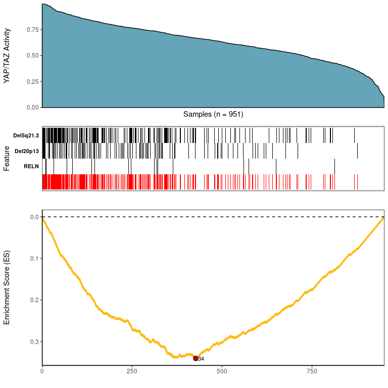
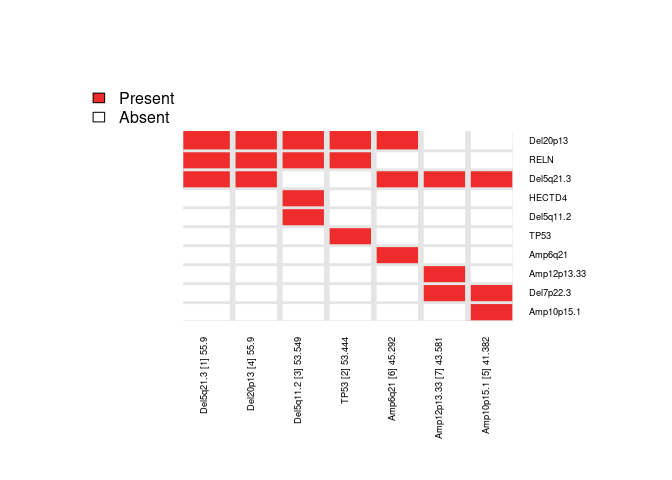

Candidate Drivers Analysis: Multi-Omic Search for Candidate Drivers of Functional Signatures
CaDrA is an R package that supports a heuristic search framework aimed at identifying candidate drivers of a molecular phenotype of interest. The main function takes two inputs: i) a binary multi-omics dataset (where the rows are 1/0 vectors indicating the presence/absence of ‘omics’ features such as somatic mutations, copy number alterations, epigenetic marks, etc.); and ii) and a molecular phenotype represented as a vector of continuous scores (sample-specific scores representing a phenotypic readout of interest, such as protein expression, pathway activity, etc.). Based on this input, CaDrA implements a forward/backward search algorithm to find the set of features that together is maximally associated with the observed input scores, based on one of several scoring functions (Kolmogorov-Smirnov, Conditional Mutual Information, Wilcoxon, custom-defined scoring function), making it useful to find complementary omics features likely driving the input molecular phenotype.
For more information, please see the associated manuscript Kartha et al. (2019)
library(devtools)
devtools::install_github("montilab/CaDrA")Here, we reproduce the results of Figure 5 of [Kartha et al., 2019] (the section titled “CaDrA Reveals Novel Drivers of Oncogenic YAP/TAZ Activity in Human Breast Cancer”).
## Read in BRCA GISTIC+Mutation ESet object
data(BRCA_GISTIC_MUT_SIG)
eset_mut_scna <- BRCA_GISTIC_MUT_SIG
## Read in input score of TAZYAP activity
data(TAZYAP_BRCA_ACTIVITY)
input_scores <- TAZYAP_BRCA_ACTIVITY
## Samples to keep based on the overlap between the two inputs
overlap <- intersect(names(input_scores), Biobase::sampleNames(eset_mut_scna))
eset_mut_scna <- eset_mut_scna[,overlap]
input_scores <- input_scores[overlap]
## Binarize ES to only have 0's and 1's
exprs(eset_mut_scna)[exprs(eset_mut_scna) >= 1] <- 1.0
## Pre-filter ESet based on occurrence frequency
eset_mut_scna_flt <- CaDrA::prefilter_data(
ES = eset_mut_scna,
max.cutoff = 0.6, # max event frequency (60%)
min.cutoff = 0.03 # min event frequency (3%)
) Here, we are evaluating the candidate search over top ‘N’ starting features and checking for overlapping resulting features from each case
topn_res <- CaDrA::candidate_search(
ES = eset_mut_scna_flt,
input_score = input_scores,
method = "ks", # Use Kolmogorow-Smirnow Scoring function
weights = NULL, # If weights is provided, it will be used to perform a weighted-KS test
alternative = "less", # Use one-sided p-value
metric = "pval", # Use the KS p-value to searc for best feature
search_method = "both", # Apply both forward and backward search
top_N = 7, # Evaluate top 7 starting points for the search
max_size = 7, # Maximum size that a meta-feature can extend to do for a given search
do_plot = FALSE, # We will plot it AFTER finding the best hits
best_score_only = FALSE # If best_score_only = FALSE, it will return meta-feature ESet,
# its observed input scores and corresponding best score
)
## Fetch the meta-feature set corresponding to its best scores over top N features searches
topn_best_meta <- CaDrA::topn_best(topn_res)
# Visualize the best results with the meta-feature plot
CaDrA::meta_plot(topn_best_list = topn_best_meta, input_score_label = "YAP/TAZ Activity")
# Evaluate results across top N seed features you started from
CaDrA::topn_plot(topn_res) 
utils::sessionInfo()
#> R version 4.0.3 (2020-10-10)
#> Platform: x86_64-apple-darwin17.0 (64-bit)
#> Running under: macOS Big Sur 10.16
#>
#> Matrix products: default
#> BLAS: /Library/Frameworks/R.framework/Versions/4.0/Resources/lib/libRblas.dylib
#> LAPACK: /Library/Frameworks/R.framework/Versions/4.0/Resources/lib/libRlapack.dylib
#>
#> locale:
#> [1] en_US.UTF-8/en_US.UTF-8/en_US.UTF-8/C/en_US.UTF-8/en_US.UTF-8
#>
#> attached base packages:
#> [1] stats graphics grDevices utils datasets methods base
#>
#> other attached packages:
#> [1] CaDrA_2.0.0 testthat_3.1.4 Biobase_2.50.0
#> [4] BiocGenerics_0.42.0
#>
#> loaded via a namespace (and not attached):
#> [1] pkgload_1.3.0 foreach_1.5.2 R.utils_2.12.0 gtools_3.9.3
#> [5] brio_1.1.3 shiny_1.7.2 assertthat_0.2.1 highr_0.9
#> [9] yaml_2.3.5 remotes_2.4.2 sessioninfo_1.2.2 pillar_1.8.0
#> [13] glue_1.6.2 digest_0.6.29 promises_1.2.0.1 colorspace_2.0-3
#> [17] htmltools_0.5.3 httpuv_1.6.5 R.oo_1.25.0 plyr_1.8.7
#> [21] pkgconfig_2.0.3 devtools_2.4.4 misc3d_0.9-1 purrr_0.3.4
#> [25] xtable_1.8-4 scales_1.2.0 processx_3.7.0 later_1.3.0
#> [29] tibble_3.1.8 farver_2.1.1 generics_0.1.3 ggplot2_3.3.6
#> [33] usethis_2.1.6 ellipsis_0.3.2 DT_0.23 cachem_1.0.6
#> [37] withr_2.5.0 ppcor_1.1 cli_3.3.0 magrittr_2.0.3
#> [41] crayon_1.5.1 mime_0.12 memoise_2.0.1 evaluate_0.15
#> [45] ps_1.7.1 R.methodsS3_1.8.2 fs_1.5.2 fansi_1.0.3
#> [49] MASS_7.3-58.1 R.cache_0.16.0 doParallel_1.0.17 gplots_3.1.3
#> [53] pkgbuild_1.3.1 profvis_0.3.7 tools_4.0.3 prettyunits_1.1.1
#> [57] lifecycle_1.0.1 stringr_1.4.0 munsell_0.5.0 callr_3.7.1
#> [61] compiler_4.0.3 caTools_1.18.2 rlang_1.0.4 grid_4.0.3
#> [65] iterators_1.0.14 rstudioapi_0.13 htmlwidgets_1.5.4 miniUI_0.1.1.1
#> [69] labeling_0.4.2 tcltk_4.0.3 bitops_1.0-7 rmarkdown_2.14
#> [73] gtable_0.3.0 codetools_0.2-18 DBI_1.1.3 reshape2_1.4.4
#> [77] markdown_1.1 R6_2.5.1 knitr_1.39 dplyr_1.0.9
#> [81] fastmap_1.1.0 utf8_1.2.2 rprojroot_2.0.3 KernSmooth_2.23-20
#> [85] desc_1.4.1 stringi_1.7.8 parallel_4.0.3 Rcpp_1.0.9
#> [89] vctrs_0.4.1 tidyselect_1.1.2 xfun_0.31 urlchecker_1.0.1